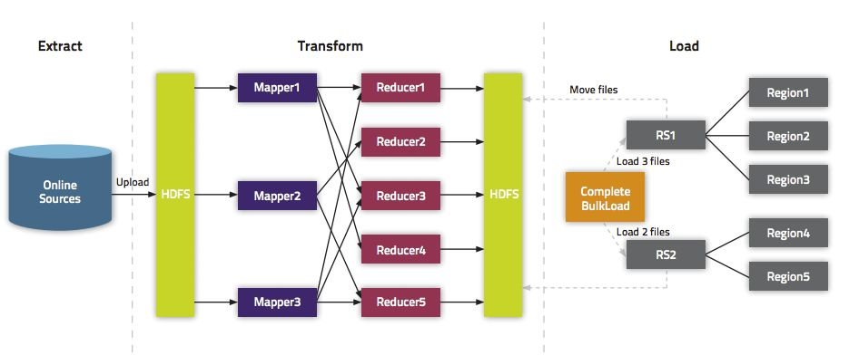
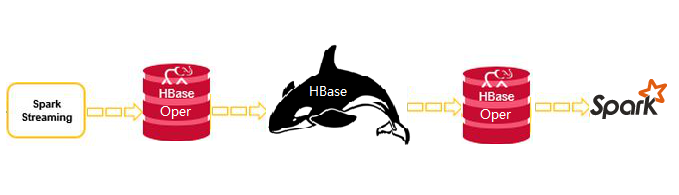

百亿级别！Spark与HBase怎么玩？
||背景：
近年来，中通的业务量不断的攀升，每天产生的数据量高达几十亿条。这种规模的数据量给传统的技术带来了极大的挑战。海量数据的存储和计算，常用的技术手段是分库分表，但分库分表同样有着自身的不足。因此，对于全局性、跨库跨表的存储和计算需求，普遍的做法是交由大数据进行计算。
对于不做更新的数据，可以通过sqoop将数据从业务系统数据库同步到hive中，进行离线计算。但对于有大量更新的数据，就不能采用以上的做法了，因为hive不能很好的支持更新操作。我们的做法是使用HBase做数据存储与去重，然后以自研的HBase工具为支撑，进行HBase的高性能读写操作。
||实现原理：
Apache Spark是专为大规模数据处理而设计的分布式内存计算引擎，特点是灵活快速。HBase是一个分布式的、面向列的开源数据库，适用于海量数据的存储与实时写入。HBaseOper是中通大数据团队针对Spark与HBase自研的高性能HBase读写工具，它是在HBase官方API基础上依据中通特有的需求场景进行了二次开发，内部提供了诸多与Spark紧密结合的API，它的诞生极大的提高了Spark对Hbase的读写速度。经测试，比Spark原生的HBase API性能提高3倍以上，平均开发效率提升10倍以上。正因为HBaseOper的诞生，才促进了Spark与HBase在中通的大规模应用。

||整体架构：
通过ogg/Canal将数据实时投递到kafka中，交由Spark Streaming分批实时消费处理，经过数据清洗、处理与转换，使用HBaseOper将数据逐批写入到HBase中，完成数据的实时同步与更新。离线计算环节，Spark SQL通过HBaseOper将指定时间范围内的数据分布式抽取到Spark内存中，进行SQL运算，并将最终结果落地到数仓中。

||应用场景：
Spark与HBase广泛应用于实时数据写入、离线统计抽取、历史数据归档、海量数据的实时判断等方面。
- 实时数据写入
Spark Streaming作为分布式实时计算的佼佼者，擅长海量数据的实时计算。我们通过Spark Streaming将消费到的含有大量更新操作的数据进行清洗、分析与计算，最终以事先设计好的规则实时写入到HBase中，HBase会自动维护重复的数据。
- 离线统计抽取
HBase本身不擅长分析，为了使HBase中的海量数据产生价值，我们通过自研的HBase工具，对指定时间范围内的数据进行扫描、过滤，并加载到Spark SQL端，进行各种复杂的统计需求。
- 历史数据归档
有些数据需要按照指定的规则进行即席查询，但多达几百亿上千亿的历史数据逐条写入HBase显然是不可取的，一来速度很慢，二来对RegionServer会产生较大的压力。对于此种场景，我们团队HBase的API进行了扩展，支持将hive的数据转换成HFile，一次性推到RegionServer中，极大的降低了RegionServer压力，大幅提高了数据写入的速度。
- 海量数据实时判断
在某些场景下，我们需要对历史（一个月以前）的数据进行实时的判断、对比与更新。由于数据量大（高峰时段160w/m），且实时性较高，redis或传统的关系型数据库并不能很好的满足要求。对于这种需求，我们对Spark Streaming程序架构进行了梳理，并对HBase相关的API进行了二次开发，最终满足了以上的需求。
||总结：
大数据时代，没有一种技术能做到通吃，选择适合的技术组合，或许将给你带来新的契机。通过对Spark与HBase的合理运用，成功的为诸多的业务系统提供了强有力的大数据算力！